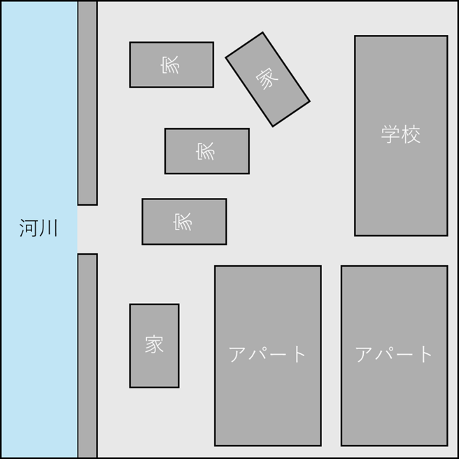

プロジェクト演習Ⅲ
都市空間における氾濫流挙動の解析 ― SPH法による構造物配置の影響評価
作成日：2025年9月12日 若宮
更新日：2025年9月19日 若宮
2025年9月22日 若宮
概要
本演習は、建物の個数・フットプリント・階数（高さ）・配置を決め、その配置が河川氾濫（ダムブレイク様式）時の流速・浸水深等にどのように影響するかを粒子法であるSPH法を用いたGUIで構築されたDesignSPHysicsで解析する。 既定の構造物配置（以下「既定配置」）を基準として解析を行い、そこから配置改良案を作成して、変更の効果などを可視化することを目標とする。
背景
近年、線状降水帯や気候変動の影響により、局地的な豪雨による都市域の浸水被害が頻発している。 都市域では、流入水量だけでなく、建物や道路の配置といった構造物配置が氾濫流挙動に影響を与える。 Balaianらは、都市の空隙率や建物の整然さといった形態的特徴が、浸水深や流速分布と密接に関係することを示している。
目的
- 既定配置を基準に、総延べ床面積を満たす設計案を複数作成し、河川越流（ダムブレイク様式）に対して避難所周辺の最大流速・浸水深・到達時間がどのように変化するかを定量的に比較する。
- 配置改良による効果が生じる流体の流れ（流路誘導、分流、局所加速、渦の生成、越流点の移動）を可視化する。
- 改良案の実務的意味（避難確保、建物の配置効率、実装上の注意点）を簡潔な提言としてまとめられるレベルまで検証する。
- 浮遊物の検証、解析領域・解析時間などの改善。
条件設定
都市形態指標を定義・計算し、同一流入量条件で比較する。DesignSPHysicsではダムブレイク方式を用いる。
粒子間距離（Inter-particle distance）を0.01mとし、解析スケールを1/20とする。
解析手順
- DesignSPHysicsの準備（FreeCAD / ParaView / DualSPHysics のセットアップ）
- 「Pre-processing」→「New Case」を選択し解析領域を定義
- モデルを「Save」で保存 → 「Gencase」で粒子確認 → 「Run」で解析
- 「PartVTK」でvtkファイル化し、ParaViewで可視化
解析領域：2.5m × 2.5m × 1.0m、解析時間：10s（1ステップ1s）
基準配置例

解析例（5秒）
横から: Test03.mp4
上から: Test032.mp4